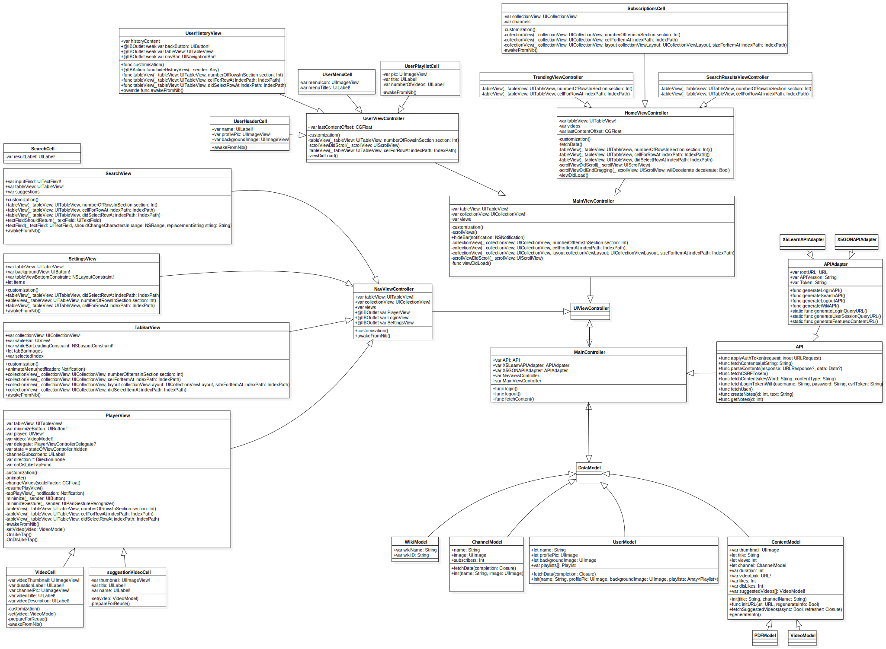
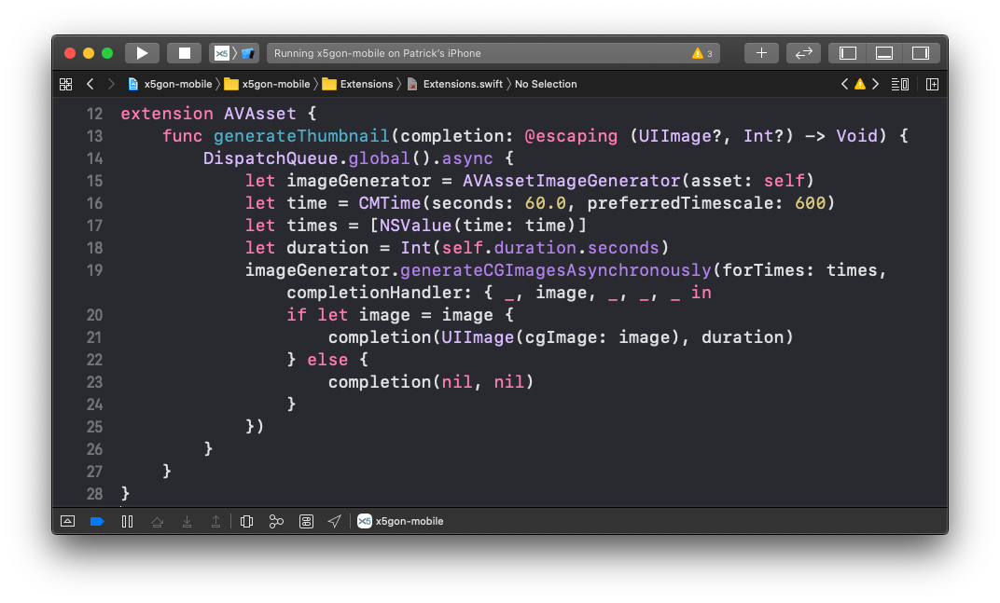
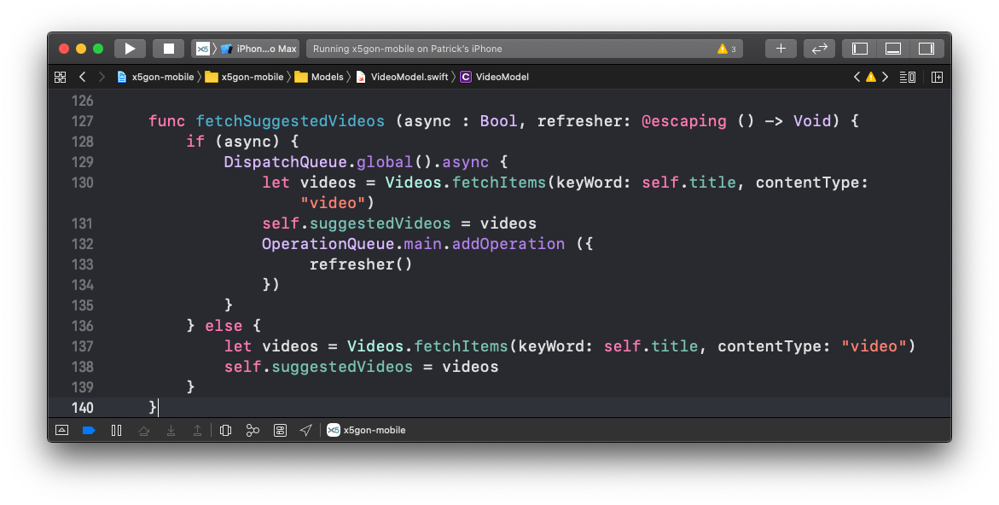

This page introduces the design of the mobile application. Generally speaking, this architecture adopts the classic Model-View-Controller (MVC) pattern (Reenskaug and Coplien, 2009).
Models include UserModel, ChannelModel and VideoModel, each holding information and buffered data from X5GON Backend.
User interactions are captured through Observers in various ViewControllers inherited from MainViewController.
With the main logic implemented in these Controllers, they dispatch view changes to relevant Views or ViewCells, and make modifications to data in Models accordingly.
Then, we use a daemon thread to keep track of changes and update them with the X5GON backend when suitable.
Click on the diagram below to get a clearer view of the general software design of the application.
 Prototype Design Pattern is used in the project on ViewControllers to ensure single responsibility principle and make ViewControllers replica for different Video sessions more reliable.
Adapter Design Pattern is used specifically for user authentication module in the application. When UserModel uses its static method to authenticate with X5GON backend, we provided a specific AuthenticateAdapter layer in case of future variations of authentication methods.
Builder Design Pattern is used in the project on constructing new UserModel, VideoModel or ChannelModel. Since the models contain a great amount information and cannot be fetched in one attempt, we used VideoBuilder and UserBuilder to store temporarily constructed middle-objects.
We are currently storing cached VideoModel and UserModel in the local caching folder as .mp4 and .json files.
In the future, we are looking to optimise data storage with the CoreData storage provided by Cocoa Touch Applications (Apple Developer, 2020). We also aim to provide an Entity Relationship Diagram at a later stage of the project.
Since a brief introduction of overall System Architecture can be found above, we provide several highlights that are worth noting at our current development stage.
The X5GON backend provides users with videos but not thumbnails or preview methods.
To tackle this issue, we used a DispatchQueue (Apple, 2009) to create a separate Thread that aims to
generate thumbnails by fetching the video image at 1 minute mark, without interfering with user interface on the main thread.
Click on the code below to see an sample of implementation for such methods.
 We kept performance in mind since our application is rather network-heavy and requires common re-rendering.
That's the key reason why we load everything behind scene with Apple's Grand Central Dispatch Multi-threading (Apple, 2009) and hint UIView whenever we finish loading
to refresh only bits of Cells. This ensures smallest amount of load on both CPU and GPU on mobile platforms.
Click on the code below to see an sample of implementation for such methods.
{kind=link}
{kind=link}
{kind=link}